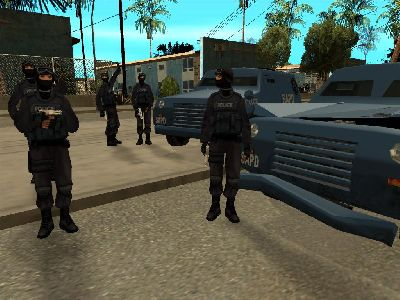
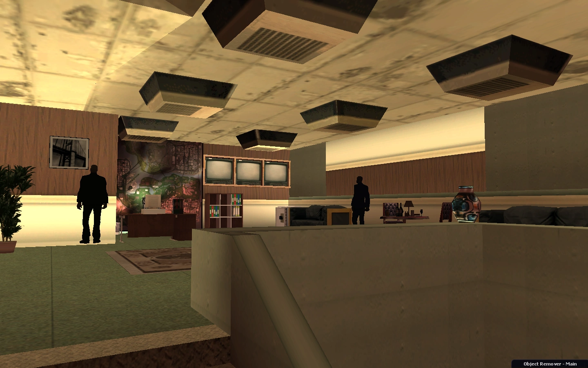

Pháp luật và mệnh lệnh
Cơ quan cầm quyền của San Andreas, The Establishment bao gồm tàn dư của các đơn vị quân đội, cơ quan thực thi pháp luật và lực lượng dân quân mới được tuyển mộ sau sự cố. Họ được cho là vẫn còn liên lạc với Chính phủ Mỹ đã im lặng trong thời gian dài - nhận thông tin và chỉ thị trực tiếp từ Capital City. Mục tiêu được tuyên bố của họ là duy trì luật pháp và trật tự bằng mọi giá, họ không quan tâm đến sự an toàn của người dân trong việc duy trì sự kiểm soát trong các khu vực của họ và không có ý định sử dụng vũ lực quá mức cho việc này. The Establishment được lãnh đạo bởi Thống đốc Skinner.
The Establishment là nhóm quyền lực nhất, có quyền truy cập vào kho vũ khí lớn nhất, nguồn cung cấp dồi dào và công nghệ, nhưng thường bị ghét bởi tất cả các phe phái khác, bao gồm các nhóm từ trong nội bộ của nó.
 Một vài hình ảnh về The Establishment.The Establishment đã tự di dời địa điểm, chỉ vài giờ sau khi dịch bệnh bùng phát, bên trong một cơ sở dưới lòng đất ở thị trấn nhỏ Bayside và tự cô lập ở đó. Họ chặn cầu Gant ở phía nam và Đường hầm Bayside ở phía đông, ngăn cách hoàn toàn phần đất này với phần còn lại của tiểu bang. Họ kiểm soát căn cứ quân sự Khu vực 69 và Trại tị nạn liền kề với nó, cùng với các tiền đồn và hoạt động nhỏ hơn trên bản đồ.
Các cấp bậc và đơn vị
1. Peacekeepers - Dân quân
Peacekeepers là những dân quân mới được tuyển dụng. Trong những ngày nghiệt ngã sau cuộc khủng hoảng, mọi người đàn ông khỏe mạnh đều được lựa chọn để giúp bảo vệ các trại tị nạn. Khi mọi thứ ổn định, tiêu chí tuyển dụng của họ trở nên khắt khe hơn, nhưng họ vẫn cho phép tham gia vào trong hàng ngũ của họ bất kỳ người nào có khả năng cầm một cây nightstick. Peacekeepers được phân công giữ trật tự bên trong Trại tị nạn và các nhiệm vụ ít quan trọng khác. Họ cũng được giao nhiệm vụ phân phối khẩu phần thức ăn và được giao nhiệm vụ giải quyết các cuộc nổi dậy trong trại.
2. Military - Quân đội
Quân đội mới của San Andreas được thành lập từ các lực lượng quân sự trước khủng hoảng còn sót lại, các cựu nhân viên pháp luật và những dân quân nổi bật trong việc phục vụ. Nhiệm vụ của họ là bảo vệ các cơ sở chiến lược khác nhau và gắn kết các hoạt động chống lại các phe phái đối lập.
3. Snatch Teams - Mắt đại bàng
Teams Snatch là những người lính, một phần của The Establishment, người được giao nhiệm vụ định vị và đưa Scavengers đến Trại tị nạn, thường bị phát hiện tuần tra gần CDF hoặc các trại của phe khác, hy vọng sẽ bắt được một số người cố gắng tìm nơi trú ẩn. Mặc dù hiếm khi, họ đã bị bắt khi tấn công các trại Survivor nhỏ hơn.
4. Rescue 01 - Biệt đội giải cứu 01
Họ thực sự là những người lính quân sự được đào tạo đặc biệt để sử dụng các chiến thuật và công cụ SWAT. Tên 'Rescue 01' đã được sử dụng trong những ngày đầu tiên của cuộc khủng hoảng khi nhiệm vụ của họ là giải cứu các cá nhân có giá trị cao từ các thành phố đổ nát nếu San Andreas và đưa họ đến nơi an toàn. Hiện tại, họ được giao nhiệm vụ bảo vệ các mục tiêu cao hơn của The Establishment và phục vụ như những người lính bộ binh cho các hoạt động khác nhau của The Suitmen.
5. The Suitmen - Quý ông chết chóc
Không ai biết chính xác những cá nhân bí ẩn này là ai. Họ hiếm khi có thể được nhìn thấy bên ngoài Cơ sở Bayside và, mặc dù những bộ suit có vẻ không phù hợp với họ nhưng họ được đào tạo chuyên sâu về nghệ thuật chiến đấu. Có tin đồn rằng họ thường thực hiện các vụ đánh chiếm hoặc bắt cóc vào các mục tiêu có giá trị và đang dựa vào các thiết bị công nghệ cao, các đội tấn công bao gồm Intel và SPAS-12. Người ta suy đoán rằng họ là các đặc vụ của chính phủ, được gửi đến hòn đảo để đảm bảo tình hình được quản lý đúng cách và họ đến và về đất liền mỗi khi họ muốn.
 Một hình ảnh hiếm hoi của The Suitmen.Gia nhập The Establishment
"Hãy tham gia The Establishment, ngài Skinner rất cần bạn!"Bất cứ ai cũng có thể tham gia The Establishment! Chỉ cần đi đến trại tị nạn, bị thương và nói chuyện với Peacekeeper. Có thức ăn miễn phí và một chiếc giường ấm áp cho bạn và nếu bạn thể hiện tốt, một tương lai vời đang chờ bạn với Quân đội, tuần tra những con đường trên chiếc Patriot của bạn, để tìm kiếm những kẻ khủng bố trong nước.
Peacekeepers - Dân quân
Điều kiện tiên quyết để tham gia vào Peacekeepers là sống hơn 2 giờ và điểm 'danh tiếng' -20.
Military - Quân đội
Điều kiện tiên quyết để gia nhập Quân đội là sống hơn 4 giờ, liên kết với Peacekeepers trước đó và ở trong phe ít nhất 50 phút. Các thành viên quân đội có Specialist Card trong bất kỳ kỹ năng chính nào có thể được chọn cho đơn vị Rescue 01.
The Suitmen - Quý ông chết chóc
The Suitmen có thể được tham gia bằng cách theo đuổi một nhánh của dòng nhiệm vụ Quân sự, tập trung vào việc đạt được và sử dụng thành thạo intel, hướng dẫn tham gia chi tiết vẫn chưa được công bố.
Thống đốc
Thống đốc được chỉ định bởi chính quyền Thành phố (tức là quản trị viên của máy chủ) dựa trên thành tích, kỹ năng lãnh đạo và sự tham gia vào thế giới trò chơi. Hoặc có thể đó là lựa chọn tùy ý, ai biết?